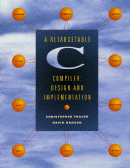

Buy: Amazon
Explore: Contents Preface
Introduction
Chapter 6
Errata: 1st 2nd printing
Reviews: comp.compilers (follow-ups: 1, 2)
Related: C Interfaces and Implementations
lcc is a retargetable compiler for Standard C. It generates code for the ALPHA, SPARC, MIPS R3000, and Intel x86 and its successors.
lcc is described in A Retargetable C Compiler: Design and Implementation (Addison-Wesley, 1995, ISBN 0805316701, ISBN-13 9780805316704). This book is a detailed tour of the lcc 3.6 source code. The distribution includes the source code for the complete compiler, the code generators for all its targets, and the code-generator generator that produced them.
The USENET newsgroup comp.compilers.lcc is an unmoderated newsgroup that serves as a forum for all topics related to the installation, use, and development of lcc.